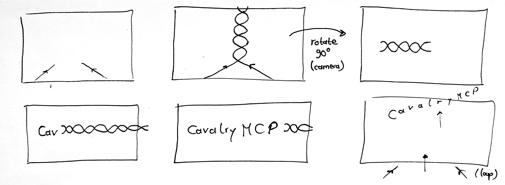
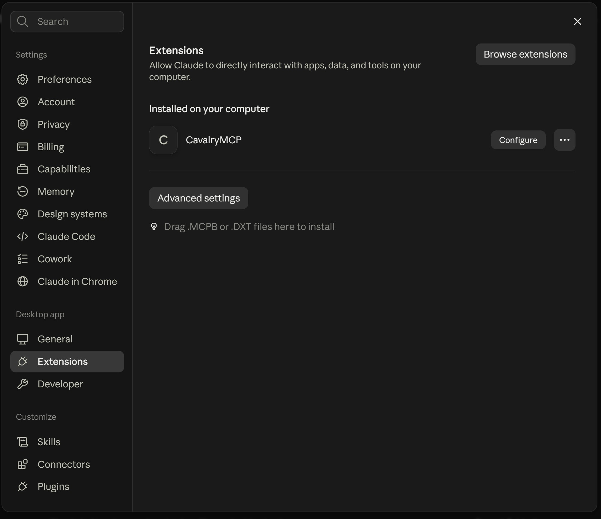

An MCP server for Claude Desktop. It automatically installs a small bridge in Cavalry, such that the agent can read the current scene state and execute code in your project. The MCP server also bundles the entire Cavalry user docs including the JavaScript API, such that you get precise answers.
This project is not affiliated with or endorsed by Cavalry, nor by Anthropic. All prompts were tested with Sonnet 5 (medium effort), unless otherwise stated.
{% include store-purchase-box.html %}You're the artist with taste and ideas. It's frustrating when you can't get them out of your head the way you want, e.g. because you're new to Cavalry or just human and don't know every functionality of a complex program. With the CavalryMCP, you can ask Claude to help you with your project, while remaining in full control.
Prompt
Use the CavalryMCP. I made a path and a blue rectangle. Now I want that the rectangle follows along the path while changing its rotation according to the normal vector of the curve. Do this procedurally such that I can later change the path itself.
Prompt
Use the CavalryMCP. I have a bouncing ball animation using Forge Dynamics. But right now, the ball only bounces off the ground (composition bottom). Instead, I want it to bounce off the rectangle named "Ground". Fix that and also tell me how I could have achieved that in the UI on my own.
LLMs are also great for learning. You can ask Claude to explain how a certain feature works or how to achieve a certain effect. The MCP server gives Claude access to the current scene state and provides tools to search the bundled Cavalry docs.
Prompt
Use the CavalryMCP. Is there a way in Cavalry to automatically animate text paragraph by paragraph? E.g. some snappy, staggered reveal animation?
Yes — Cavalry has a built-in behavior made exactly for this: Auto-Animate, combined with Text's paragraph/line level splitting. Here's the recipe for a snappy, staggered paragraph-by-paragraph reveal:
Prompt
Use the CavalryMCP. Unfortunately, I've lost the overview over my scene. Tell me what is going on in all these layers.
Here's the picture of your scene, reconstructed from the scene graph:
Concept: A particle-morphing animation that spells out a sequence of math symbols/words, one morphing into the next — like sqrt → pi → e → integral → nabla → partial → delta → approx → infty → in → equiv → smaller → bigger → sum.
Core building blocks
basicShape#1 "Particle" — the single source shape (a dot/particle) used by every duplicator below. Its fill color comes from colorArray#3 "Colors".basicShape#1, is masked by its own editableShape (a vector shape of that symbol's glyph), and has its particle scale driven by an oscillator, giving a lively size-jitter per particle.The morph chain
Each duplicator's output feeds into a blendSubMeshPositions node that blends it toward the next duplicator in the sequence, which in turn becomes a deformer on the next duplicator. This creates one continuous pipeline from sqrt all the way to sum.
Summary: It's a 14-stage particle text-morph rig, each stage a masked duplicator plus a blend transition to the next, all sharing one particle shape and one color source, with staggers/oscillators layered on top for organic timing and scale variation.
Want me to check current attribute values, or render a preview frame to see it visually?
Why not aim even higher and let Claude implement a complex scene from scratch? Well, as expected, this pushes the limits and the results are doubtable. But still fun to see what is already possible and maybe useful to get started with a new project or to get inspiration for a new idea by quickly prototyping it.
Prompt
Use the CavalryMCP. I want to make an artistic animated simulation of a black hole showcasing its accretion disk in shades of an orange/red/amber (and maybe yellow/white for very hot regions).
This does not need to be a physically accurate simulation. Prioritize a visually striking, atmospheric result over strict scientific correctness.
The accretion disk should be animated and feel continuously in motion. Create visible rotational flow around the black hole, with some variation in speed, density, turbulence and brightness, such that the movement feels organic. You may want to use particles, procedural noise, trails, blur, distortion, or similar techniques available in Cavalry.
You may look up reference images of black holes and accretion disks, and briefly consult the underlying physics for visual inspiration, but treat those references as a starting point rather than a constraint.
Claude can read your images. So why not start your new project with a sketch on paper? Then let the agent give you some first working version of your idea in Cavalry.
Prompt

Use the CavalryMCP. Attached is a sketch of an animation storyboard I want to create in Cavalry. The strokes I drew should have some thickness to them and round caps. Arrows indicate in which direction they "flow". The animation should feel rather quick and organic. Whenever the two paths touch, a particle burst should be emitted from their position that spreads outwards in circles but quickly decays. Use two different bright and vibrant colors. The background should have a subtle gradient (with both colors contrasting those of the braid). Let the braid weave upwards, then rotate a camera later on. Afterwards (see second row), the braid reveals the text "CavalryMCP" from left to right. Finally, construct the animation such that it can loop, i.e. while the "CavalryMCP text" flies out to the top (staggered per character), the new paths of the new braid form from below. The whole animation should be around 8 to 10s long, with enough time to read the final text on screen.
The product installs two pieces: an MCP server that plugs into Claude Desktop, and a small bridge script that runs inside Cavalry. The bridge opens a local connection between the two, over which the MCP server can query the current scene state and submit JavaScript for Cavalry to execute (which is the same scripting API you can use in the Script Editor). User docs and API reference are bundled with the MCP server. The MCP server provides tools to interact with your Cavalry project, but also to search the bundled docs and API reference effectively without having to load everything into context at once.
No guaranteed results. Claude is an LLM (Large Language Model) with probabilistic outputs that depend a lot on your prompts and context. I can't guarantee that even with CavalryMCP you'll get the results you want, especially when asking for very complex scenes. Rather than "construct me this scene from scratch", I see its strengths in a search assistant for the docs and a fast collaborator for small and targeted edits in your project.
Single Composition awareness. Claude can only read the scene state of your currently active Composition, not other Compositions in your project.
Long-running actions may time out. Claude waits up to 2 minutes for Cavalry to finish executing a command. Very heavy operations (e.g. rendering many frames) may exceed this and appear to fail even though Cavalry is still working.
This project wouldn't exist without the Cavalry team building such a great animation tool, and Anthropic's work on Claude and the Model Context Protocol. Special thanks also for the devs behind Scenery for their development tools and their and their TypeScript definitions for Cavalry.
A download link is sent to you by email after checkout. It contains a .mcpb file (MCP Bundle). In Claude Desktop, open your preferences (by pressing Cmd/Ctrl + ,), go to the Extensions tab, and drag the downloaded .mcpb file into there to install CavalryMCP.

Start your prompt with "Use the CavalryMCP" (if you're in a new session). At the first time Claude tries to connect to your running Cavalry instance, it will install a small bridge UI script into Cavalry. This is done automatically. You only need to open Scripts > CavalryMCP in Cavalry and leave it open (Claude will you tell you this as well).
Not released yet — check back soon.